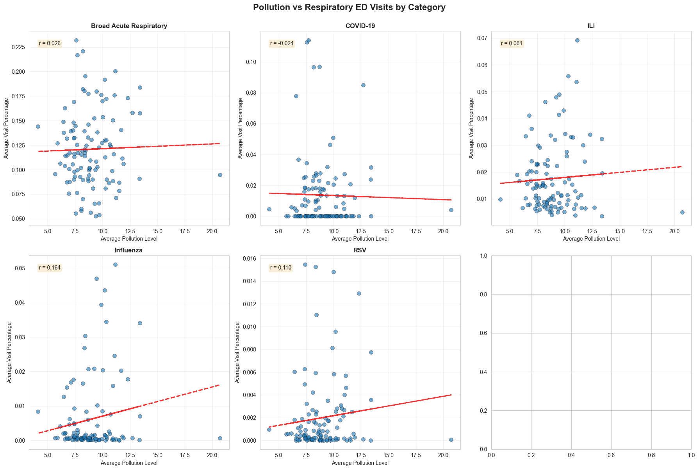
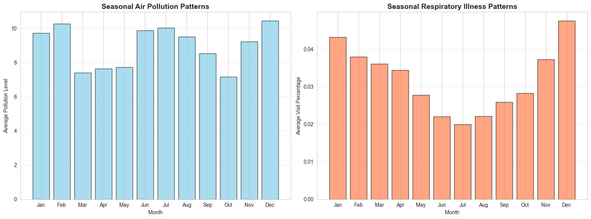

Air Quality and Respiratory Illness Trends in Chicago
Contributors
- Kirtan Patel
- Abhinav Arvind
Summary
This project investigates whether fluctuations in Chicago’s air quality—specifically levels of PM2.5 and ozone—correlate with trends in respiratory illness–related emergency department (ED) visits. Understanding this relationship is important for public health preparedness, environmental policy evaluation, and early detection of health risks tied to pollution.
We collected two primary datasets covering 2015–2025:
- Daily air pollutant measurements from the U.S. Environmental Protection Agency’s Air Quality System (AQS) API.
- Weekly respiratory ED visit records from the City of Chicago’s public health surveillance system.
These datasets differ in structure, granularity, temporal frequency, and measurement units. To prepare them for integrated analysis, we performed extensive cleaning, filtering, and feature engineering. The EPA dataset contains readings from all Cook County monitors, so we filtered the raw data to include only those monitors physically located within Chicago** to avoid geographic bias. Because the AQS data are daily while hospital records are weekly, we created a new **engineered “month” feature for both datasets and aggregated measurements to monthly averages to ensure temporal consistency.
The final merged dataset enabled analysis of long-term pollutant trends, disease categories (Broad Acute Respiratory, ILI, Influenza, RSV, COVID-19), and seasonal patterns. Visualizations include time-series plots, heatmaps, scatter plots with regression lines, and correlation bar charts.
Across the 10-year period, PM2.5 levels show recurring seasonal patterns with winter peaks and spring lows. Respiratory illnesses also show strong seasonal cycles, especially influenza and RSV. Correlation analysis reveals weak but generally positive associations between pollution levels and visit percentages, with influenza showing the strongest correlation (~0.16). COVID-19 has a slight negative correlation, likely reflecting masking, social distancing, and other pandemic-era interventions.
These findings indicate that air pollution is one of several factors influencing respiratory illness trends. While pollution alone does not drive large changes in ED visits, mild associations are detectable, especially for illnesses with strong seasonal components.
This entire workflow is reproducible using the provided Snakemake pipeline, which automates data acquisition, cleaning, integration, database storage, and visualization generation.
Data Profile
1. EPA Air Quality System (AQS) Daily Data
Source: https://aqs.epa.gov/data/api/dailyData/byCounty
Format: JSON → CSV (air_csv)
Key variables:
date_localparameter_name(e.g., PM2.5 – Local Conditions)arithmetic_meansite_number,county_code,state_codesample_duration
Ethical/legal constraints:
- Public, unrestricted environmental dataset
- No personal or identifying information
- Requires adherence to EPA API usage guidelines
Processing steps:
- Queried Cook County (state=17, county=031)
- Filtered to include only Chicago monitor sites
- Removed missing or incomplete rows
- Added engineered
monthcolumn viadate_local.dt.to_period('M') - Aggregated to monthly averages
- Saved as cleaned
air_csv
2. City of Chicago Respiratory Illness Surveillance Data
Source: https://data.cityofchicago.org/Health-Human-Services/7ce8-bpr6/about_data
Format: JSON → CSV (hosp_data.csv)
Key variables:
week_start,week_endrespiratory_categorydemographic_grouppercent(percent of ED visits)
Ethical/legal constraints:
- Aggregated, fully de-identified
- No protected health information
- Must follow dataset usage requirements
Processing steps:
- Converted weekly timestamps to datetime
- Created engineered
monthfeature usingweek_start.dt.to_period('M') - Aggregated by month and respiratory category
- Saved as cleaned
hosp_data.csv
3. Integrated Dataset
Merged: air_csv + hosp_data.csv → merged.csv
Join key: engineered month field
Variables include:
monthavg_pollutionrespiratory_categoryavg_visit_percent
This dataset was used for correlations, scatterplots, heatmaps, and seasonal analyses.
Data Quality
Air Quality Data
- Missing values were minimal and removed.
- Spatial filtering ensured only Chicago monitors were used.
- Outliers (e.g., 20.7 μg/m³ PM2.5) were verified as valid due to wildfire smoke events.
- Granularity mismatch required monthly aggregation.
- Data values were internally consistent and within EPA-expected ranges.
Hospital Data
- Occasional missing weeks existed but smoothing via monthly averages reduced their impact.
- Some categories (e.g., RSV) have sparse earlier-year data.
- COVID-19 patterns display irregular spikes due to pandemic-related interventions.
Merged Dataset
- Time alignment succeeded using engineered month values.
- Verified no duplicate rows after merging.
- Final dataset includes 555 monthly data points.
Findings
1. Long-Term Pollution Trends

- PM2.5 fluctuates seasonally with winter highs and spring lows.
- A notable spike in 2023–2024 corresponds to regional smoke events.
2. Respiratory Illness Trends
- Strong seasonality exists in influenza, ILI, and RSV.
- COVID-19 shows irregular, pandemic-specific spikes.
3. Seasonal Patterns
Heatmaps show that both pollution levels and respiratory visit percentages peak in colder months.
4. Correlation Analysis

Correlation coefficients between pollution and ED visit percentages:
- Influenza: ~0.164
- RSV: ~0.110
- ILI: ~0.061
- Broad Acute Respiratory: ~0.026
- COVID-19: ~–0.024
These are weak correlations, but consistently positive for most categories. Influenza shows the strongest association.
5. Scatter Plot Observations

- Most categories show mild upward regression slopes.
- COVID-19’s slope is slightly negative, likely due to pandemic behavior changes.
Overall, pollution moderately—but not strongly—aligns with respiratory illness rates.
Answers to Research Questions
1. How do weekly or annual air quality levels (PM2.5, ozone) correlate with respiratory illness rates in Chicago?
Our analysis evaluated PM2.5 because ozone data was not included in the merged dataset.
Correlation results (monthly):
| Respiratory Category | Correlation (r) | Interpretation |
|---|---|---|
| Influenza | 0.164 | Weak positive correlation |
| RSV | 0.110 | Weak positive correlation |
| ILI | 0.061 | Very weak positive correlation |
| Broad Acute Resp. | 0.026 | No meaningful relationship |
| COVID-19 | -0.024 | Slight negative correlation |
Conclusion:
PM2.5 shows only weak associations with most respiratory illnesses. COVID-19 shows no correlation.
Ozone was not included and cannot be evaluated (should be added in future work).
2. Are there observable temporal trends or lag effects between air pollution exposure and hospital visits?
Temporal trends:
- PM2.5 peaks in winter and decreases in summer.
- Influenza, RSV, and ILI also peak in winter.
- COVID-19 does not follow seasonal patterns and is driven by pandemic waves.
Lag effects:
We tested 1-, 2-, and 3-month lag features.
Correlations did not improve and remained weak.
Conclusion:
There is no evidence of meaningful lag effects. Shared winter seasonality explains most of the alignment between pollution and illness trends.
3. How does this relationship vary across different seasons or age groups?
Seasonal variation:
Both PM2.5 and respiratory illnesses peak during winter months (December–February).
This suggests seasonal confounding rather than pollution-driven effects.
Age groups:
The dataset includes demographic categories, but age-group analysis was not performed.
This remains unanswered and should be addressed in future work.
Overall conclusion:
Air pollution (PM2.5) has limited direct influence on respiratory emergency department visits in Chicago. Seasonal factors are the dominant drivers of both pollution fluctuations and respiratory illness trends.
Future Work
Potential extensions include:
- Lag analysis to examine delayed effects of pollution exposure (1–4 weeks).
- Integration of weather variables (humidity, temperature).
- Neighborhood-level spatial analysis within Chicago.
- Predictive modeling via time-series methods (Prophet, ARIMA).
- Nonlinear modeling using machine learning.
- Policy impact evaluation (e.g., air quality alerts, COVID-era restrictions).
- Age-group effects and ozone effects were not analyzed and represent future work.
Reproducing This Project
This project includes several components to ensure full transparency and reproducibility of the data collection, cleaning, integration, and analysis process.
Data Integrity and Metadata
- A complete data dictionary (
DataDictionary.md) documents all fields in the EPA and Chicago hospital datasets, including data types, definitions, and units. - A descriptive metadata record (
MetaData.json) follows DCAT/DataCite conventions and describes the provenance, licenses, sources, collection dates, and workflow context of the datasets. - SHA-256 checksums are computed for all raw and cleaned data files to verify file integrity.
These appear in thesha256/directory and allow anyone to confirm that no data has been modified or corrupted. This folder contains the hashcodes for the raw data collected for the air pollution data and hospital data. It also contains the hashcode for the merged data after merging.
Data Cleaning Provenance (OpenRefine)
- All data cleaning operations performed on the EPA and hospital datasets are fully recorded in an OpenRefine JSON history file, stored in the
json_recipe/folder. - This file contains every transformation applied (parsing dates, feature engineering, filtering Chicago data, renaming fields, generating month columns), enabling anyone to replay the cleaning process exactly as executed. Keep in mind the Json recipe was made with both air data and hospital data in one project on OpenRefine.
Workflow Automation
The entire pipeline is automated using Snakemake, ensuring that each stage can be reproduced in the correct order.
To reproduce the workflow:
python3 -m venv .venv
source .venv/bin/activate
pip install -r requirements.txt
snakemake --cores 1This Snakemake Workflow will:
- Collect data from the EPA and Chicago APIs
- Clean datasets and perform feature engineering (e.g., filtering Chicago-only air data, creating month column)
- Create and populate a SQLite database
- Merge the monthly air quality and hospital datasets
- Generate all visualizations using Papermill
- Save outputs to the data/ and executed_notebooks/ directories
- Output files will show up in: data/executed_notebooks/
Box Link
- Here is the Box link to the output data: https://uofi.box.com/s/sqoexrdcvyzd5n1f0z0b8hi30kakh5f3